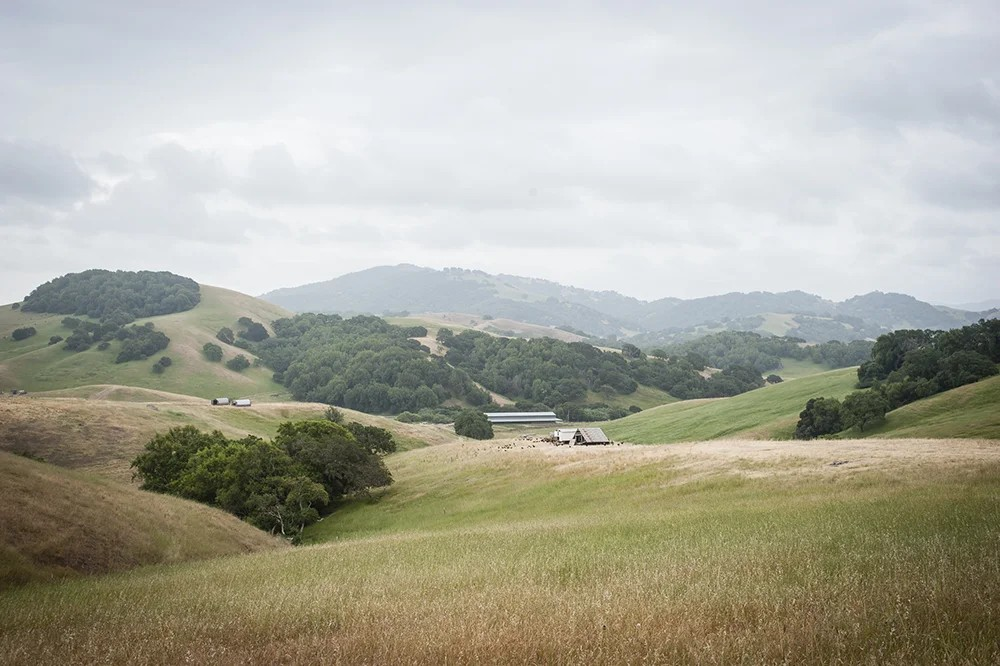
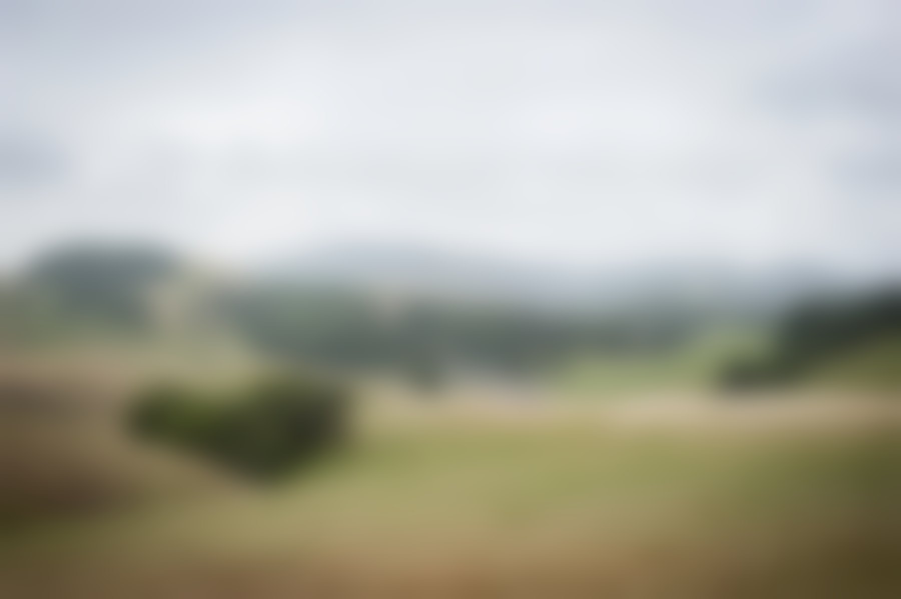
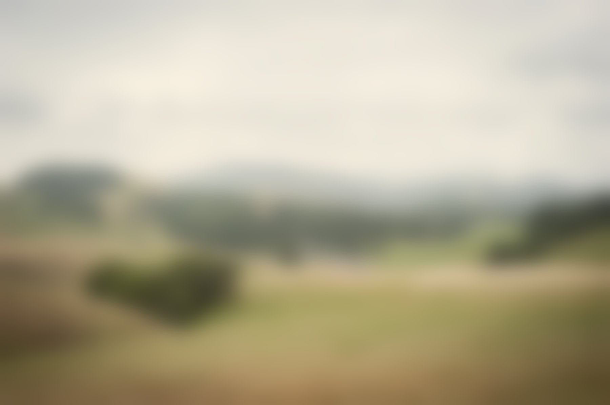
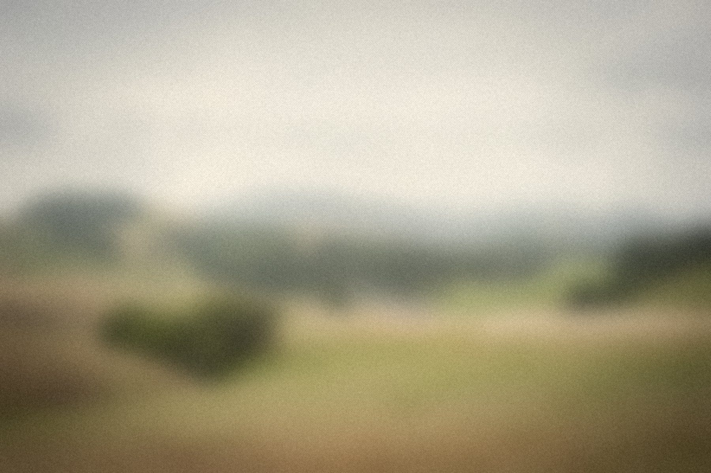
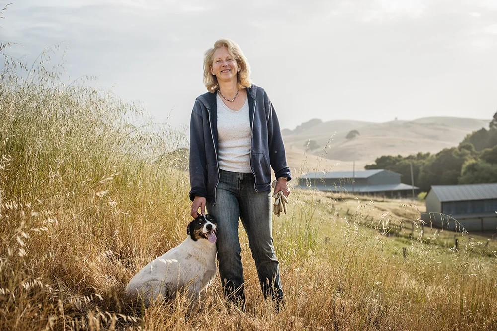
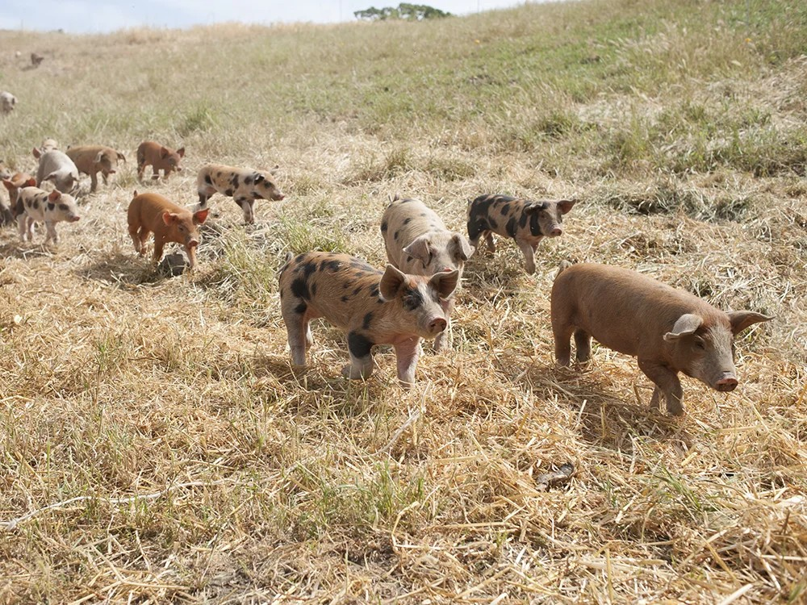
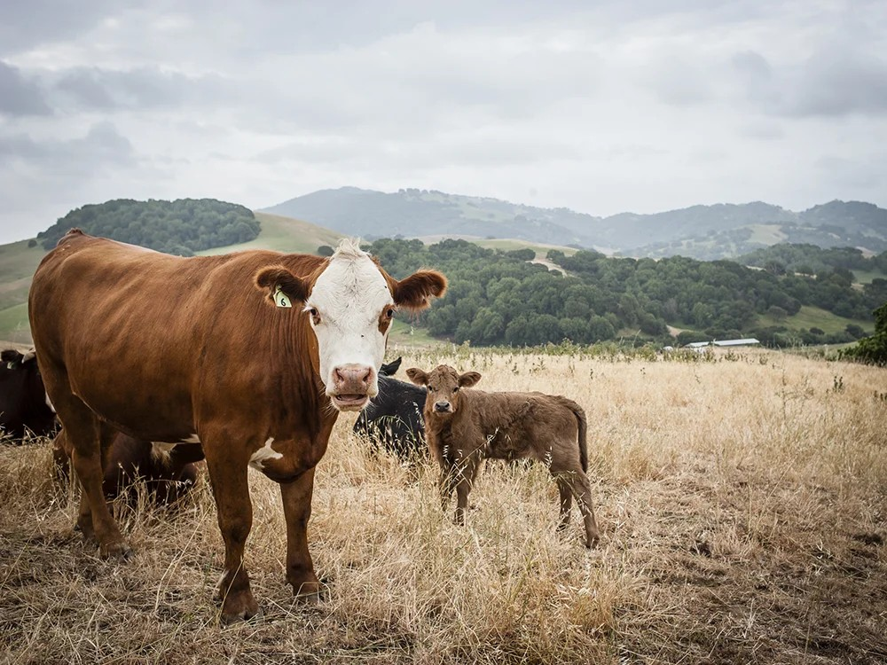
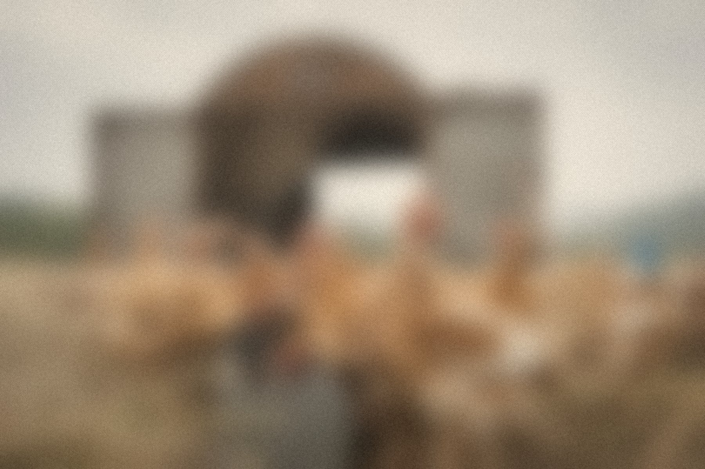
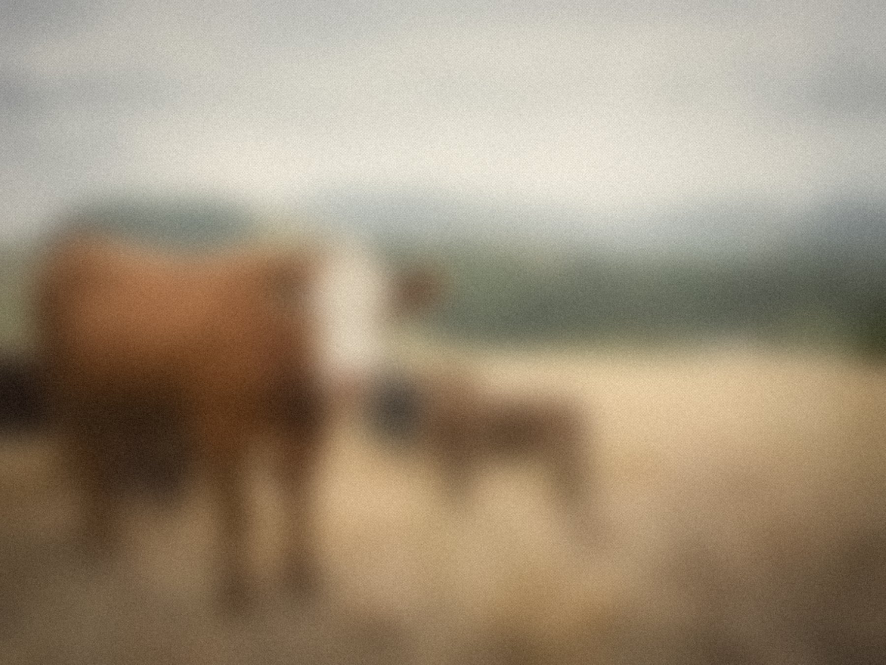
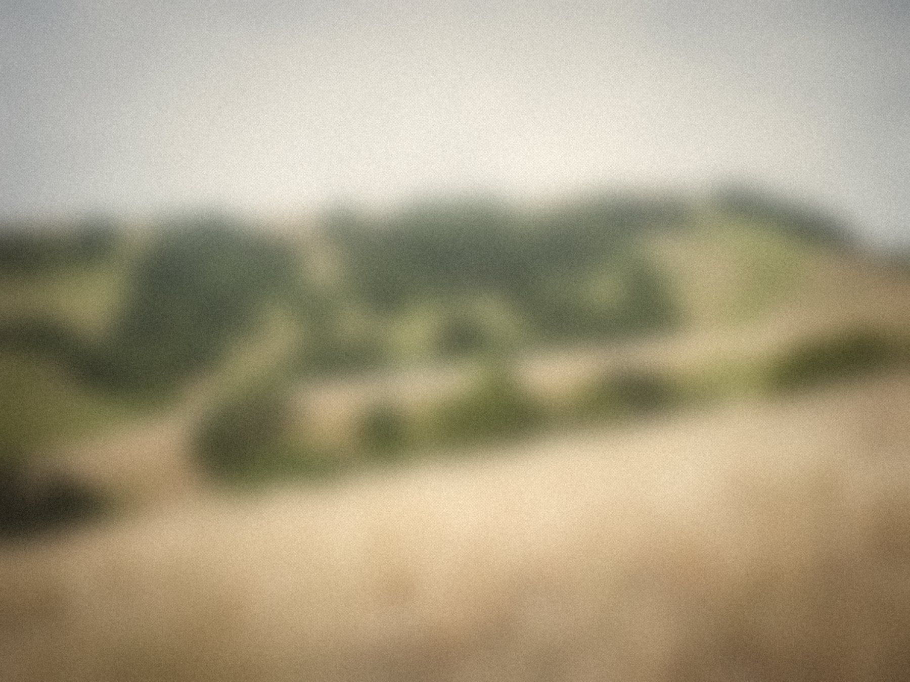

IDENTITY 09Photography
REAL FARM PHOTOS, SHARP OR SOFTENEDThe softened treatment, step by step

01Original
A real farm photo, shot overcast.
SHARP, AS SHOT

02Blur
Two passes, until only the shapes of the land are left.
GAUSSIAN, 1.4% OF WIDTH, TWICE

03Grade
Warmed - with the blacks lifted like film.
RED +3%, BLUE −6%, BLACKS +8%

04Grain and weave
Film grain and a faint linen weave with a soft vignette.
GRAIN 3%, WEAVE 2%, VIGNETTE 22%

05On top
Growth Icon - then logomark where the photo is calm.
LINEN CARD, LINEN LOGO
SharpTHE WORK ITSELF: PEOPLE, ANIMALS, THE STORE



SoftenedBEHIND TYPE, THE LOGO AND THE LINEN CARD



UP CLOSE: THE GRAIN AND THE WEAVE
Type goes where the photo is calm.
Ink on the pale sky, linen on the darker grass. Pick the photo for the space the type needs.
Check contrast under the type.
4.5 to 1 for text, 3 to 1 for the logo and headlines, measured at the spot behind them.
Only real farm photos.
Sky, grass and the hills in frame.